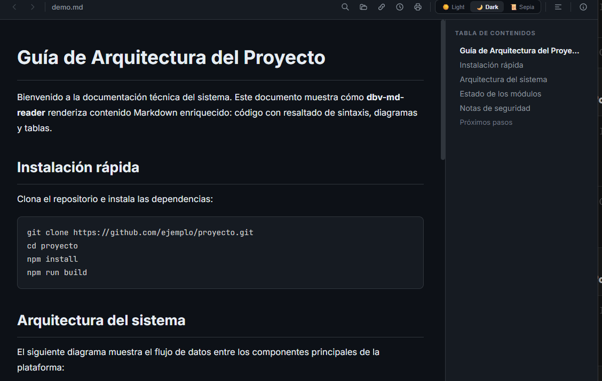
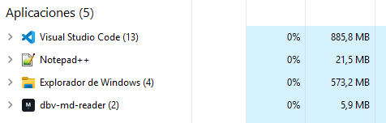
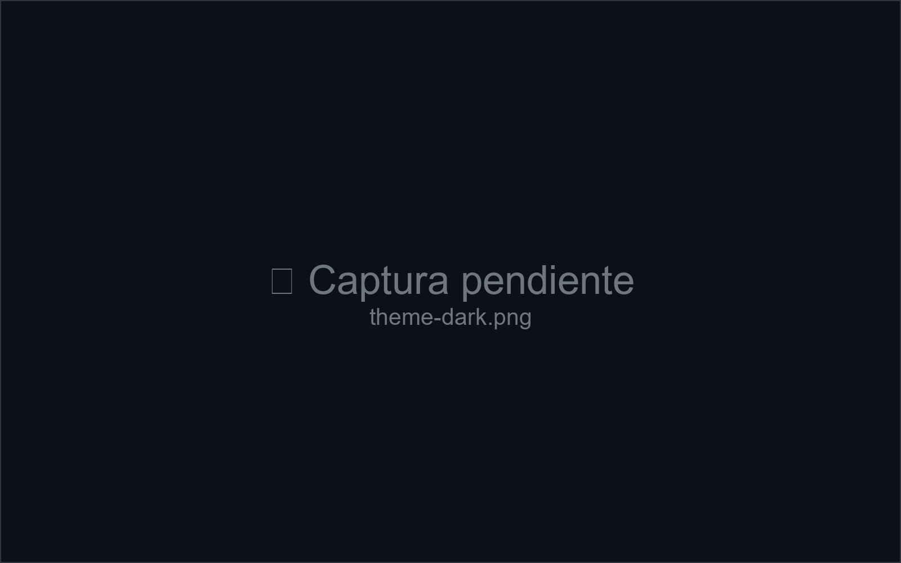
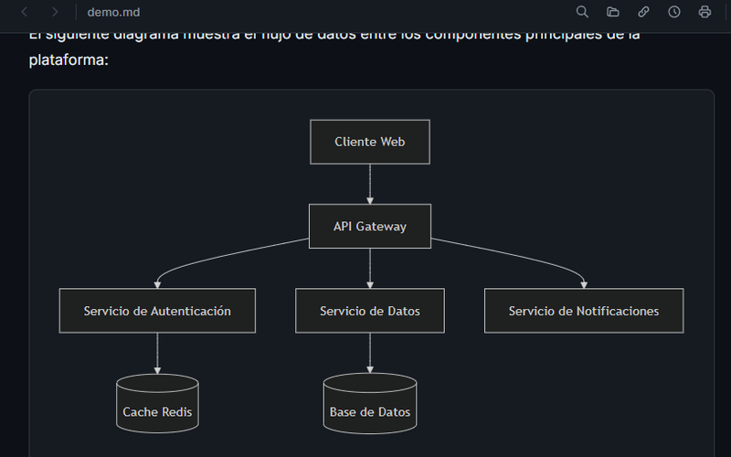
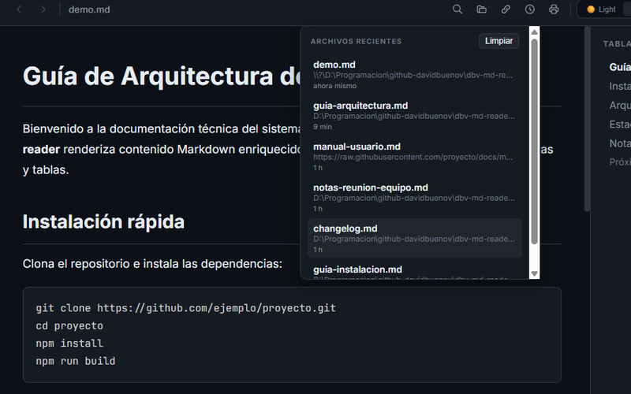

Archivos recientes
Los últimos documentos que abriste, a un clic — nunca más tienes que volver a buscarlos.
Gratis · Código abierto · Solo para Windows · Español/English 🆕
Abre archivos .md al instante, sin abrir un IDE ni un navegador.
~14 MB, arranca en menos de 200 ms. Instalador ligero con el motor de
renderizado de Windows ya incluido.
Windows 10/11 · Instalador sin permisos de administrador · Sin cuenta, sin publicidad, sin telemetría

La mayoría de lectores de Markdown están construidos sobre Electron: empaquetan un navegador Chromium completo solo para mostrarte texto, consumiendo cientos de MB de RAM por una tarea sencilla. DBV Markdown Reader está escrito en Rust sobre Tauri v2 y usa el motor WebView2 que Windows ya trae instalado — el mismo resultado, una fracción del peso.

Los mismos 2 archivos .md abiertos a la vez — memoria según el Administrador de Tareas de Windows. Ni Notepad++, la referencia histórica de ligereza, se acerca.
Los últimos documentos que abriste, a un clic — nunca más tienes que volver a buscarlos.
Edita el archivo con tu editor favorito y la vista se actualiza sola, sin perder el scroll.
Pega la URL de un .md publicado en internet y lo abres directamente, sin descargarlo a mano.
Todo el HTML embebido se sanitiza automáticamente antes de mostrarse — cero scripts maliciosos.
Los bloques ```mermaid se convierten en diagramas vectoriales interactivos al vuelo.
Claro, Oscuro y Sepia para lectura prolongada — se recuerda tu elección entre sesiones.
Ctrl + F resalta cada coincidencia en el documento mientras escribes.
Tabla de contenidos generada sola a partir de los encabezados, con navegación e historial.
Interfaz completa en los dos idiomas, con detección automática del idioma del sistema.
Elige el tema con el que quieres verlo — la app recuerda tu preferencia igual que aquí.



El instalador dbv-markdown-reader_x.y.z_x64-setup.exe desde la página de Releases. No necesitas Rust, Node ni ninguna herramienta de programación.
Doble clic, sin permisos de administrador. Tú decides si dbv-md-reader se asocia con .md desde una pantalla con casillas marcadas por defecto.
Doble clic sobre cualquier .md, o ábrelo desde la app con Ctrl + O.
Gratis, de código abierto y sin ataduras. Si algo falla, abre un issue en GitHub.